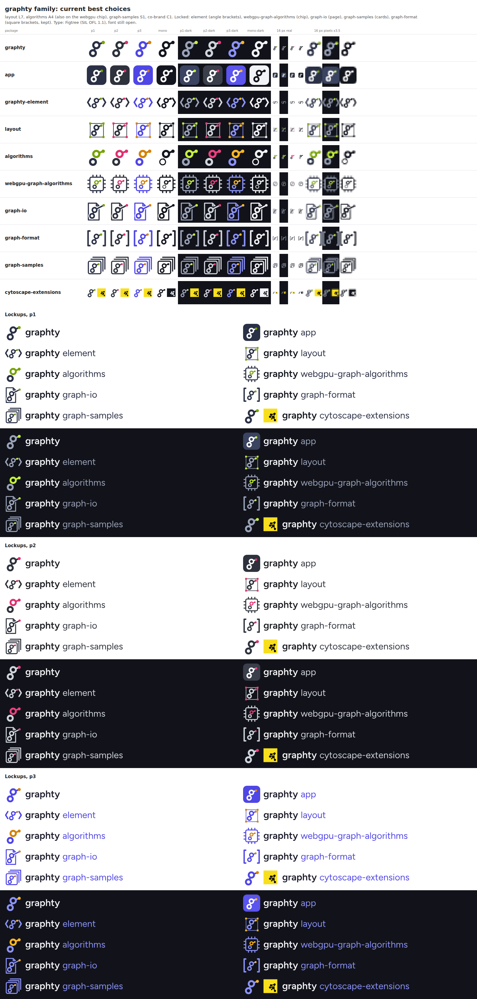
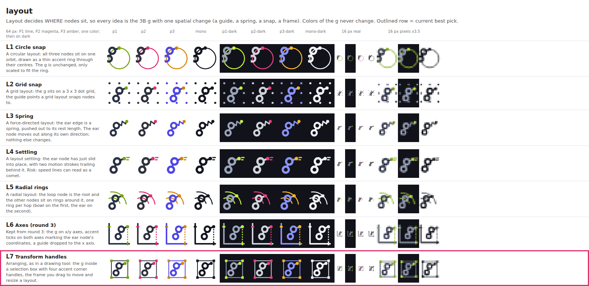
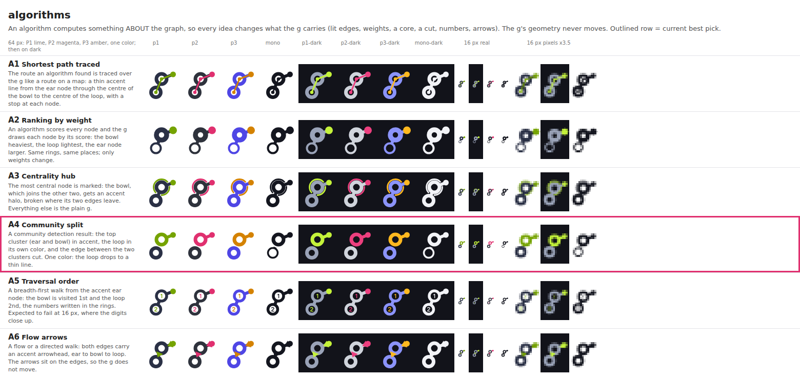
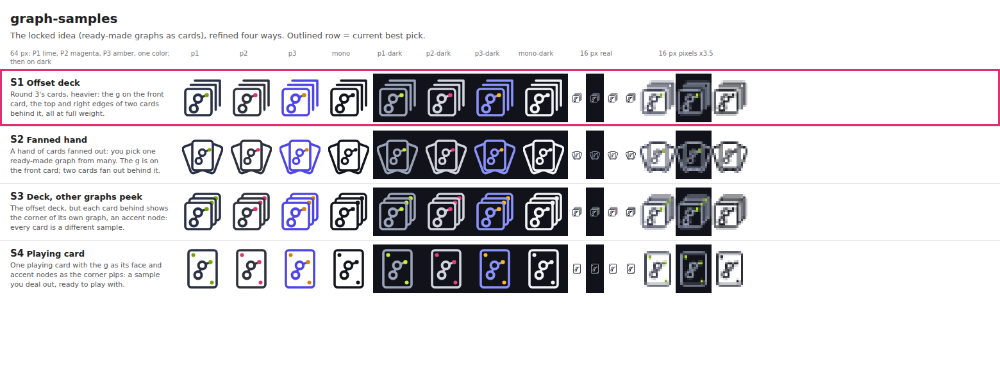
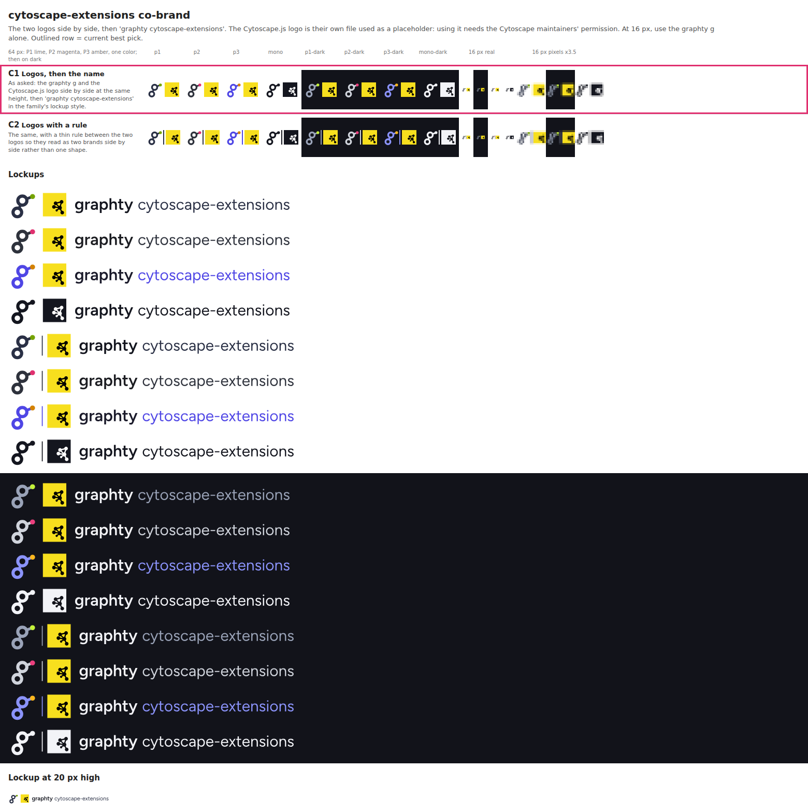

Every idea is the 3B g with one change. Layout ideas (L1-L7) change WHERE the nodes sit; algorithm ideas (A1-A6) change WHAT the g carries and never move it. Rows show 64 px in the three palettes you picked (P1 ink + lime, P2 graphite + magenta, P3 indigo + amber) and one color, on light and dark, then real 16 px and the 16 px pixels enlarged. The outlined row is the current pick. Type is Figtree (SIL OFL 1.1); the font is still open.
Current picks: layout L7 (runner-up L3 spring), algorithms A4 (runner-up A1 traced path), graph-samples S1 (runner-up S4 playing card), co-brand C1.




The Cytoscape.js logo is their own file, used here only as a placeholder: shipping it needs the Cytoscape maintainers' permission, and the one-color version alters its fills, which also needs their agreement.
